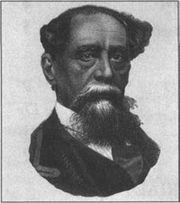
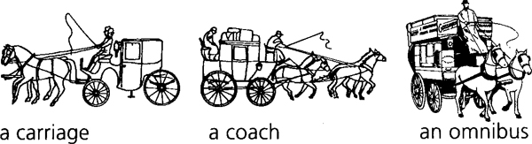
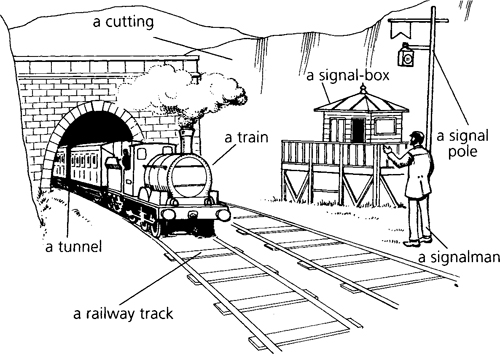
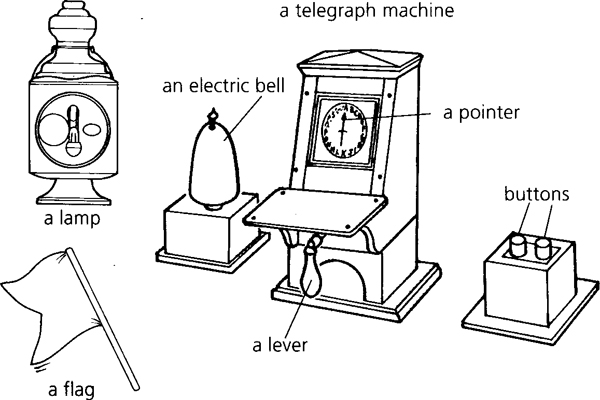
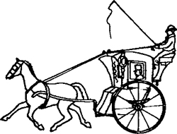

Charles Dickens sinh ngày 7 tháng 2 năm 1812. Gia đình Dickens sống gần Portsmouth, tại bờ biển phía Nam nước Anh. Sau đó, gia đình ông chuyển đến London. Dickens có ba người anh em trai và ba chị em gái. Bố của Dickens, John, làm viên chức văn phòng. Ông làm việc cho Hải quân Anh. Nhưng John không khéo quản lý tiền bạc. Ông nợ tiền rất nhiều người. Năm 1824, ông bị bắt giam.
Cha, mẹ và các anh chị em của Dickens đều phải vào tù cùng ông. Dickens phải vào nhà máy làm việc. Ông không bao giờ quên thời gian khốn khó ấy.
Dickens chỉ được đi học trong vài năm. Nhưng ông đọc rất nhiều sách và tự học. Năm 1834, Dickens trở thành phóng viên báo. Ông cũng bắt đầu sáng tác truyện. Những tác phẩm đầu tay của ông được đăng trên các tạp chí. Những câu chuyện này rất, rất nổi tiếng. Dickens trở thành nhà văn được yêu thích nhất nước Anh ở thế kỷ 19.
Năm 1836, Dickens kết hôn với Catherine Hogarth. Họ có 10 người con. Nhưng Catherine và Charles không hạnh phúc. Năm 1857, Dickens gặp một nữ diễn viên tên là Ellen Ternan. Ông đã yêu bà. Dickens ly thân với vợ vào năm 1858.
Dickens làm việc chăm chỉ cả cuộc đời. Ông trở nên vô cùng giàu có. Dickens đã tới khắp nước Anh, Scotland, Ireland và Hoa Kỳ. Ông đọc truyện của mình tại các nhà hát. Vào thời này, những câu chuyện về ma rất được ưa chuộng. Mọi người đều thích các truyện ma của Dickens.
Một số tác phẩm của Charles Dickens gồm có: Oliver Twist (1837–1839), Bleak House (1852–1853), A Tale of Two Cities (1859), Great Expectations (1860–1861), A Christmas Carol (1843) và Our Mutual Friend (1864–1865).
Dickens qua đời vào ngày 8 tháng 6 năm 1870. Ông thọ 58 tuổi. Ông được chôn cất tại nhà thờ Westminster Abbey ở London.
Thời gian: 1861. Bối cảnh: London và Đông Nam nước Anh.
Hai câu chuyện trong tập này là những câu chuyện ma. Nhân viên gác hiệu lấy tuyến đường sắt làm bối cảnh. Câu chuyện này được sáng tác vào năm 1866.
Vào thời này chưa có ô tô. Trong các thành phố, người ta đi lại bằng xe ngựa riêng hay xe ngựa chở khách hay xe buýt. Tất cả những phương tiện này đều do ngựa kéo. Nhưng người ta có thể đi lại giữa các thành phố và thị trấn bằng tàu hỏa.

Lần đầu tiên người ta đi tàu hỏa là vào năm 1825. Sự kiện này diễn ra ở Anh. Từ những năm 1830 đến những năm 1860, nhiều tuyến đường sắt được xây dựng ở Anh. Các tuyến đường này là những đường ray bằng kim loại. Người ta có thể đi những chuyến tàu dài. Và họ có thể đi nhanh hơn. Một đoàn tàu có nhiều toa tàu. Các toa tàu này được nối với nhau. Người ta ngồi trên ghế trong các toa tàu. Một đoàn tàu có thể chở được nhiều người.
Các đoàn tàu chạy trên đường ray bằng kim loại. Nhưng các đoàn tàu không thể đi lên đồi và núi. Có những đường hầm dài xuyên qua những ngọn đồi và núi lớn. Các đoàn tàu lửa chạy trên đường ray bằng kim loại xuyên qua những đường hầm này. Đất của những ngọn đồi nhỏ đã bị đào đi. Đường ray xe lửa nằm trên nền đất bằng phẳng, bên dưới những đoạn đất đào đi này.

Những tuyến đường sắt đầu tiên rất nguy hiểm. Có rất nhiều vụ tai nạn trên các tuyến đường sắt. Sau đó, đội ngũ nhân viên gác hiệu giúp các tuyến đường sắt trở nên an toàn hơn. Đội ngũ nhân viên gác hiệu này sử dụng các thiết bị đặc biệt. Những thiết bị này được gọi là máy điện báo. Những máy điện báo này gửi các thông điệp về các chuyến tàu. Các thông điệp được gửi đi qua điện.
Đội ngũ nhân viên gác hiệu làm việc trong những nhà ga - những ngôi nhà đặc biệt nằm cạnh đường ray xe lửa. Mỗi ga xe lửa có một nhà ga. Mỗi đầu đường hầm cũng có một nhà ga. Đội ngũ nhân viên gác hiệu theo dõi cẩn thận các đoàn tàu. Họ gửi cho nhau những tin nhắn về các đoàn tàu.

Câu chuyện có tên Bóng ma trong phiên tòa, trước đây có tên là "Một vụ án mạng". Dickens sáng tác câu chuyện này vào năm 1865. Câu chuyện kể về một phiên tòa ở một tòa án luật pháp nổi tiếng ở London - Old Bailey. Old Bailey là một tòa nhà lớn. Trong tòa nhà này có nhiều phòng xử án.
Trong câu chuyện này, tòa sẽ xử một vụ giết người. Cảnh sát đã bắt một người đàn ông. Người đàn ông này bị cáo buộc giết bạn của mình. Tại tòa, bị cáo sẽ được hỏi nhiều câu hỏi.
Một luật sư biện hộ sẽ hỏi bị cáo nhiều câu hỏi. Luật sư này sẽ nói: "Người đàn ông này có tội. Anh ta có tội giết người". Một luật sư bào chữa cũng sẽ hỏi bị cáo nhiều câu hỏi. Luật sư này sẽ nói: "Người đàn ông này không có tội. Anh ta không giết bạn của mình".
Sẽ có rất nhiều người đến tòa. Một số người sẽ nói về bị cáo. Một số người sẽ nói về người bị giết. Một số người sẽ nói về vụ giết người. Những người này là nhân chứng. Và lời nói của họ là bằng chứng.
Có một vị thẩm phán chủ trì phiên tòa. Vị thẩm phán cùng với ban bồi thẩm lắng nghe các bằng chứng. Ban bồi thẩm đưa ra quyết định về bị cáo - Bị cáo có tội hay không có tội? Ban bồi thẩm gồm mười hai người. Một trong số họ - bồi thẩm đoàn trưởng - là người đứng đầu.
Vào thời điểm câu chuyện này được sáng tác, các thẩm phán, luật sư và những người trong ban bồi thẩm đều là nam giới. Phụ nữ không được làm việc tại các tòa án ở Anh. Những kẻ giết người bị treo cổ. Người có tội sẽ có một sợi dây thừng quấn quanh cổ. Sau đó, sợi dây thừng sẽ được kéo chặt lại và họ sẽ chết.
Trong câu chuyện này, người ta sử dụng loại xe ngựa một bánh. Đây là những chiếc xe ngựa nhỏ do một con ngựa kéo. Những chiếc xe ngựa này là những chiếc taxi.

xe ngựa một bánh